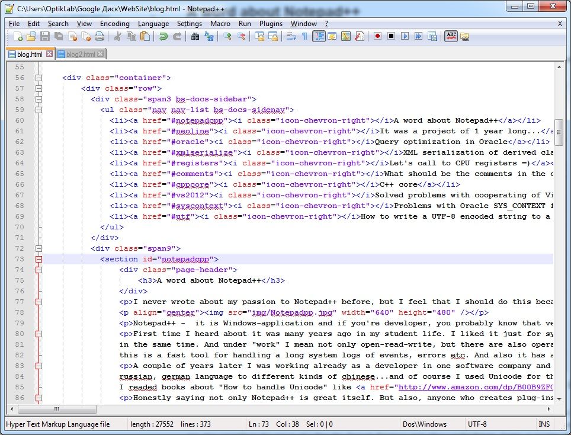
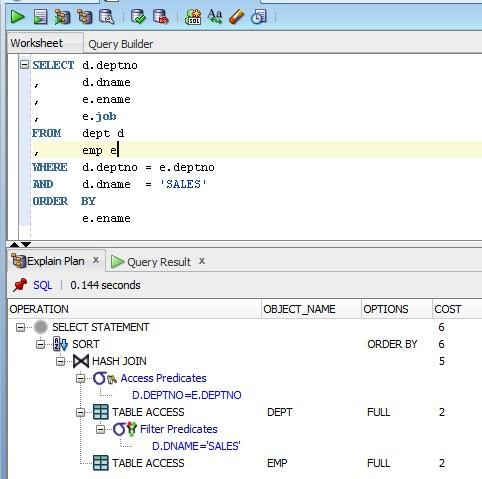
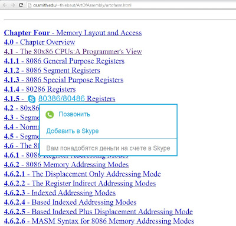

Why goto is so bad
At any place I work there are was a moment with discussion about using of break. continue and goto operators.

I read a lot about goto in books and even McConnel "Solid code" wrote about how it is bad.
And in all these places, in code styles, style guides and books, there are only one point: missing the main line of code or loosing the control.
But I belive that with correct splitting of the program to smaller parts (methods, functions, classes) and with solid architecture there are no such a big deal about loosing control by using just break or continue. Sometimes it makes code shorter and easier.
Recently I read very good article (or is this a book?) What every programmer should know about memory I found good example of why we should not use operators which lead to assembly JUMP from the real performance point of view: (here is) and it is called Prefetching.
"Code has the advantage that it is linear between jumps. In these periods the processor can prefetch memory efficiently. Jumps disturb this nice picture because
- the jump target might not be statically determined;
- and even if it is static the memory fetch might take a long time if it misses all caches.
These problems create stalls in execution with a possibly severe impact on performance. "
Of course, this is all about the total optimizations at the low lever and probably doesn't have such influence at the high level or OOP level languages. But I think this is good and useful description from the technical point of view.
OAuth and tears
Not so far I moved my ASP.NET MVC 3 project to latest&greatest ASP.NET MVC 5. In my previous article I was writing about this process and how to use own datatables for ASP.NET Identity 2.0 model. One of the points for latest version was OAuth 2.0 "out of the box". But now I have to implement authentication in my Web API project part and read a lot about it...and here is tears...

I recommend to see one of the latest courses about Security in Web API 2.0: WebAPI 2.0 Security
You may see this course available on rutracker =). This is express-course but it is very usefull and telling about SSL settings in your web server, main authentication mecanisms and capabilities in ASP.NET, client-side security in JavaScript, and also Token Based Authentication. Also there are good describing of problems in WebAPI 1.0 and how it was solved in WebAPI 2.0.
During this course there are touched OAuth 2.0 a lot and there are gived link to another useful course Introduction to OAuth2, OpenID Connect and JSON Web Tokens (JWT), and this is course you should start from. Because I know a lot of new things about the history of OAuth 2.0 and where is it now.
For some of you it is not a news, but briefly: Eran Hammer who is author of OAuth 1.0 was working on improvements for this protocol, but big companies like Google and Facebook and Microsoft wanted to help in this. These guys from Enterprise development wanted some other features then Consumer-developers did. And they pushed a lot on it. Everyone want his own features. Finally Eran leaved this community and asked to decline his Last Name from the Authors list. Sad final of OAuth 2.0 was even worse, because big companies was not able to agree with it on all the levels and everyone have its own implementation. So, we can't even call OAuth 2.0 as a "protocol", it is like simple set of rules (which is unnecessary to take into account).
You can understand how Eran hates his creation by watching this video, and also he telling about his new creation in that area.
He wrote several good articles about the problems of OAuth 2.0 in deep:
oauth-2-0-without-signatures-is-bad-for-the-web
oauth-2-0-and-the-road-to-hel
Final of this decisions was that "big guys" was forced to implement their own Security features in the protocol which should be secure from the scratch. Facebook, for example, was hacked several times:
Hacking-facebook-with-oauth2-and-chrome
How I Hacked Any Facebook Account...Again!
OAuth 2.0 is a way to hell.(C) Eran Hammer
Resume from me: if you want to implement serious web-service with good level of security you should learn how to do this from the best professionals, implement it and ask for review from these guys. Now one will create a good implementation for you, for example, standard templates of Microsoft ASP.NET projects have a not so good functional to handle this (they write in MSDN "this is not for production"). Author of PluralSight courses develops Open-Source framework for security purposes and he have a nice web-site for support it link. Hope this helps.
Customize ASP.NET Identity 2.0
Recently I found a nice explanation of latest Securing (ASP.NET) web API-based architectures from DevWeek about the totally new ASP.NET Identity 2.0 in MVC 5.1 and Web API 2.0 and I decided to rework my current project to use it because
1. New system built on open standard OWIN, which allows to take a look 'What's inside?' and gives some flexibility in choosing web-server and OS.
2. Owin-based authentication natively supports security for Web API 2.0.
3. Latest projects contains OAuth 2.0 authentication out of the box.
I think many of ASP.NET MVC 1 - 4 web-developers rework standard Forms authentication provided by Microsoft. I did this too. I had overrided Membership Provider, Roles Provider and Identity, and you may find a lot of examples. But there are no so much information about ASP.NET Identity 2.0, so I think my post will cover it nicely.
As you know, when you create a new project from ASP.NET MVC template, it create default database for you which such a nice list of tables:

My goal is to show how to remove these tables and use my own tables, but still use its standard authentication system with support of external OAuth 2.0 providers and Web API 2.0 security system.
I use nice MVC patterns in my projects where Model, Logic and Presentation layers are different projects. Presentation layer is MVC project and all others are libraries. It allows my to have minimal changes in Model and Logic projects, but rework only Web project from ASP.NET MVC 3.0 to ASP.NET MVC 5.1. As data model I use Reverse Engineered POCO classes, so I can show you my changes in Database Schema and also in Code.
In my database schema I use my own tables User, Roles, UserRoles (x-table), and its relations.

Pic. DB schema.
1.
To start you need to add some tables or columns in your schema. First of all, take a look in the standard tables, which ASP.NET generated by default. You may create a new ASP.NET MVC 5 project, find generated DB file in App_Data folder (Hidden by default, so use Show All Files button in Solution Explorer) and connect to this file to see the tables. In other way you may go to a link with ASP.NET SQL scripts a copy-paste column right in your script or DB model. Compare results for me shows that I need to add some columns in my Users tables, change type of Id key from INTEGER to NVARCHAR (same for Roles table), and also I needed to add tables UserClaims and UserLogins.
Pic. New table Users at the left, old one at the right.

Pic. New schema ready to work.
2.
On my next step I generated SQL Script and created new database. After that I generated model classes via Visual Studio plug-in.
Pic. Model classes.
3.
Unload your old ASP.NET MVC 1-4 project from the solution and create a new one, MVC 5.1. Add all necessary dependent projects like Model and Repository in the References on a new web project. And now we gonna write code a little bit.4.
Some steps described in Overview of Custom Storage Providers for ASP.NET Identity, but it doesn't show anything about IoC engines and uses totally external Storage like MySQL. So I will duplicate information in some parts, but not everywhere.Go to References -> NuGet and do Uninstall for Microsoft ASP.NET Identity EntityFramework. This removes all dependencies like IdentityUser, UserStore, RoleStore and we need to create our own. Now if you compile your project, you will see some problem files:1. App_Start/Startup.Auth.cs
2. App_Start/IdentityConfig.cs
3. Models/IdentityModels.cs
4. Controllers/AccountController.cs
5.
Let's implement IUserStore, IRoleStore, IClaimStore, IUserRoleStore, IUserLoginStore in our classes, because it is necessary for ASP.NET Identity 2.0 system. We may create 2 classes: UserStore, which implements interfaces like IUserStore, IClaimStore, IUserRoleStore, IUserLoginStore) and RoleStore, which implements IRoleStore. My example for RoleStore, which uses IoC Framework (example for MySQL is here):class RoleStore : IRoleStore<Role>
{
#region Private fields
/// <summary>
/// The _users repository.
/// </summary>
private readonly IRepository<PhiUser> _usersRepository;
/// <summary>
/// The _roles repository.
/// </summary>
private readonly IRepository<Role> _rolesRepository;
/// <summary>
/// The _user roles repository.
/// </summary>
private readonly IRepository<UserRole> _userRolesRepository;
#endregion
/// <summary>
/// Initializes a new instance of the <see cref="RoleStore"/> class.
/// </summary>
/// <param name="usersRepository">The users repository.</param>
/// <param name="rolesRepository">The roles repository.</param>
/// <param name="userRolesRepository">The user roles repository.</param>
public RoleStore(
IRepository<PhiUser> usersRepository,
IRepository<Role> rolesRepository,
IRepository<UserRole> userRolesRepository)
{
this._usersRepository = usersRepository;
this._rolesRepository = rolesRepository;
this._userRolesRepository = userRolesRepository;
}
/// <summary>
/// Performs application-defined tasks associated with freeing, releasing, or resetting unmanaged resources.
/// </summary>
public void Dispose()
{
}
/// <summary>
/// Inserts role in asynchronous mode.
/// </summary>
/// <param name="role">The role.</param>
/// <returns>Task result.</returns>
/// <exception cref="System.ArgumentNullException">Role is null.</exception>
public Task CreateAsync(Role role)
{
if (role == null)
{
throw new ArgumentNullException("role");
}
_rolesRepository.Insert(role);
return Task.FromResult<object>(null);
}
/// <summary>
/// Deletes role in asynchronous mode.
/// </summary>
/// <param name="role">The role.</param>
/// <returns>Task result.</returns>
/// <exception cref="System.ArgumentNullException">Role is null.</exception>
public Task DeleteAsync(Role role)
{
if (role == null)
{
throw new ArgumentNullException("user");
}
_rolesRepository.Delete(role);
return Task.FromResult<Object>(null);
}
/// <summary>
/// Searches role by Id in asynchronous mode.
/// </summary>
/// <param name="role">The role Id.</param>
/// <returns>Task result.</returns>
/// <exception cref="System.ArgumentNullException">Role Id is null.</exception>
public Task<Role> FindByIdAsync(string roleId)
{
if (String.IsNullOrEmpty(roleId))
{
throw new ArgumentNullException("roleId");
}
Role result = _rolesRepository.GetById(roleId);
return Task.FromResult<Role>(result);
}
/// <summary>
/// Searches role by name in asynchronous mode.
/// </summary>
/// <param name="role">The role name.</param>
/// <returns>Task result.</returns>
/// <exception cref="System.ArgumentNullException">Rolename is null.</exception>
public Task<Role> FindByNameAsync(String roleName)
{
if (String.IsNullOrEmpty(roleName))
{
throw new ArgumentNullException("roleName");
}
Role result = this._rolesRepository.Table.ToList().FirstOrDefault(x => x.Name == roleName);
return Task.FromResult<Role>(result);
}
/// <summary>
/// Updates role in asynchronous mode.
/// </summary>
/// <param name="role">The role.</param>
/// <returns>Task result.</returns>
/// <exception cref="System.ArgumentNullException">Role is null.</exception>
public Task UpdateAsync(Role role)
{
if (role == null)
{
throw new ArgumentNullException("user");
}
_rolesRepository.Update(role);
return Task.FromResult<Object>(null);
}
}Cutted example of UserStore, just to show you implemented interfaces, because there are no Rocket Science, just do it like in RoleStore (example for MySQL is here):
public class UserStore : IUserStore<PhiUser>,
IUserClaimStore<PhiUser>,
IUserLoginStore<PhiUser>,
IUserRoleStore<PhiUser>,
IUserPasswordStore<PhiUser>
{
#region Private fields
/// <summary>
/// The _users repository.
/// </summary>
private readonly IRepository<PhiUser> _usersRepository;
...
#endregion
#region Constructor
/// <summary>
/// Initializes a new instance of the <see cref="UserStore"/> class.
/// </summary>
/// <param name="usersRepository">The users repository.</param>
/// ...
public UserStore(IRepository<PhiUser> usersRepository, ... )
{
this._usersRepository = usersRepository;
...
}
#endregion
#region IUserStore
/// <summary>
/// Performs application-defined tasks associated with freeing, releasing, or resetting unmanaged resources.
/// </summary>
public void Dispose()
{
}
/// <summary>
/// Insert a new PhiUser in the UserTable.
/// </summary>
/// <param name="user">Current user.</param>
/// <returns>Task with result.</returns>
/// <exception cref="ArgumentNullException">User is null.</exception>
public Task CreateAsync(PhiUser user)
{
...
}
/// <summary>
/// Deletes a user.
/// </summary>
/// <param name="user">Current user.</param>
/// <returns>Task with result.</returns>
public Task DeleteAsync(PhiUser user)
{
...
}
/// <summary>
/// Returns an PhiUser instance based on a userId query.
/// </summary>
/// <param name="userId">The user's Id.</param>
/// <returns>Task with result.</returns>
/// <exception cref="ArgumentNullException">User id is null.</exception>
public Task<PhiUser> FindByIdAsync(String userId)
{
...
}
/// <summary>
/// Returns an PhiUser instance based on a userName query.
/// </summary>
/// <param name="userName">The user's nam.</param>
/// <returns>Task with result.</returns>
/// <exception cref="ArgumentNullException">Username is null.</exception>
public Task<PhiUser> FindByNameAsync(String userName)
{
...
}
/// <summary>
/// Updates the UsersTable with the PhiUser instance values.
/// </summary>
/// <param name="user">PhiUser to be updated.</param>
/// <returns>Task with result.</returns>
/// <exception cref="ArgumentNullException">User is null.</exception>
public Task UpdateAsync(PhiUser user)
{
...
}
#endregion
#region IUserClaimStore
/// <summary>
/// Inserts a claim to the UserClaimsTable for the given user.
/// </summary>
/// <param name="user">User to have claim adde.</param>
/// <param name="claim">Claim to be adde.</param>
/// <returns>Task with result.</returns>
/// <exception cref="ArgumentNullException">User or claim is null.</exception>
public Task AddClaimAsync(PhiUser user, Claim claim)
{
...
}
/// <summary>
/// Returns all claims for a given user.
/// </summary>
/// <param name="user">Current user.</param>
/// <returns>Task with result.</returns>
/// <exception cref="ArgumentNullException">User is null.</exception>
public Task<IList<Claim>> GetClaimsAsync(PhiUser user)
{
...
}
/// <summary>
/// Removes a claim froma user.
/// </summary>
/// <param name="user">User to have claim removed.</param>
/// <param name="claim">Claim to be removed.</param>
/// <returns>Task with result.</returns>
/// <exception cref="ArgumentNullException">User or claim is null.</exception>
public Task RemoveClaimAsync(PhiUser user, Claim claim)
{
...
}
#endregion
#region IUserLoginStore
/// <summary>
/// Inserts a Login in the UserLoginsTable for a given User.
/// </summary>
/// <param name="user">User to have login added.</param>
/// <param name="login">Login to be added.</param>
/// <returns>Task with result.</returns>
/// <exception cref="ArgumentNullException">User or login is null.</exception>
public Task AddLoginAsync(PhiUser user, UserLoginInfo login)
{
...
}
/// <summary>
/// Returns an PhiUser based on the Login info.
/// </summary>
/// <param name="login">User login.</param>
/// <returns>Task with result.</returns>
/// <exception cref="ArgumentNullException">Login is null.</exception>
public Task<PhiUser> FindAsync(UserLoginInfo login)
{
...
}
/// <summary>
/// Returns list of UserLoginInfo for a given PhiUser.
/// </summary>
/// <param name="user">Current user.</param>
/// <returns>Task with result.</returns>
/// <exception cref="ArgumentNullException">User is null.</exception>
public Task<IList<UserLoginInfo>> GetLoginsAsync(PhiUser user)
{
...
}
/// <summary>
/// Deletes a login from UserLoginsTable for a given PhiUser.
/// </summary>
/// <param name="user">User to have login remove.</param>
/// <param name="login">Login to be remove.</param>
/// <returns>Task with result.</returns>
/// <exception cref="ArgumentNullException">User or login is null.</exception>
public Task RemoveLoginAsync(PhiUser user, UserLoginInfo login)
{
...
}
#endregion
#region IUserRoleStore
/// <summary>
/// Inserts a entry in the UserRoles table.
/// </summary>
/// <param name="user">User to have role adde.</param>
/// <param name="roleName">Name of the role to be added to use.</param>
/// <returns>Task with result.</returns>
/// <exception cref="ArgumentNullException">User or rolename is null.</exception>
public Task AddToRoleAsync(PhiUser user, String roleName)
{
...
}
/// <summary>
/// Returns the roles for a given PhiUser.
/// </summary>
/// <param name="user">Current user.</param>
/// <returns>Task with result.</returns>
/// <exception cref="ArgumentNullException">User is null.</exception>
public Task<IList<String>> GetRolesAsync(PhiUser user)
{
...
}
/// <summary>
/// Verifies if a user is in a role.
/// </summary>
/// <param name="user">Current user.</param>
/// <param name="role">Current role.</param>
/// <returns>Task with result.</returns>
/// <exception cref="ArgumentNullException">User or role is null.</exception>
public Task<Boolean> IsInRoleAsync(PhiUser user, String role)
{
...
}
/// <summary>
/// Removes a user from a role.
/// </summary>
/// <param name="user">Current user.</param>
/// <param name="role">Current role.</param>
/// <returns>Throw exception.</returns>
/// <exception cref="NotImplementedException">Always thrown.</exception>
public Task RemoveFromRoleAsync(PhiUser user, String role)
{
throw new NotImplementedException();
}
#endregion
#region IUserPasswordStore
/// <summary>
/// Returns the PasswordHash for a given PhiUser.
/// </summary>
/// <param name="user">Current user.</param>
/// <returns>Task with result.</returns>
public Task<String> GetPasswordHashAsync(PhiUser user)
{
...
}
/// <summary>
/// Verifies if user has password.
/// </summary>
/// <param name="user">Current user.</param>
/// <returns>Task with result.</returns>
public Task<Boolean> HasPasswordAsync(PhiUser user)
{
...
}
/// <summary>
/// Sets the password hash for a given PhiUser.
/// </summary>
/// <param name="user">Current user.</param>
/// <param name="passwordHash">Password hash.</param>
/// <returns>Task with result.</returns>
public Task SetPasswordHashAsync(PhiUser user, String passwordHash)
{
...
}
#endregion
}
6.
Next, if you use IoC Engine, then register all created classes in it, so it could instantiate it.I use Simple Injector, so in my case it looks like this:
...
_instance.Register<IUserStore<PhiUser>, UserStore>();
_instance.Register<IUserClaimStore<PhiUser>, UserStore>();
_instance.Register<IUserLoginStore<PhiUser>, UserStore>();
_instance.Register<IUserRoleStore<PhiUser>, UserStore>();
_instance.Register<IUserPasswordStore<PhiUser>, UserStore>();
_instance.Register<IRoleStore<Role>, RoleStore>();
...
7.
Next, we may remove or comment all code inside 3. Models/IdentityModels.cs.ApplicationUser should be renamed to User everywhere. ApplicationUserManager will be renamed in 2. App_Start/IdentityConfig.cs to MyUserManager, or something like this. Rename parameter in the constructor call for UserManager. For Simple Injector it looks like this:
...
var manager = new PhiUserManager(ModelContainer.Instance.GetInstance<UserStore>());
...
8.
Now, fix the 4. Controllers/AccountController.cs by the same way:
...
public AccountController(IUserStore<PhiUser> userStore)
{
UserManager = new PhiUserManager(userStore);
}
...
9.
Also, we need to reimplement method GenerateUserIdentityAsync. I did this by Static Helper class:
...
public class MyUserHelpers
{
public static async Task<ClaimsIdentity> GenerateUserIdentityAsync(PhiUser user, UserManager<PhiUser> manager)
{
// Note the authenticationType must match the one defined in CookieAuthenticationOptions.AuthenticationType
var userIdentity = await manager.CreateIdentityAsync(user, DefaultAuthenticationTypes.ApplicationCookie);
// Add custom user claims here
return userIdentity;
}
}
...
10.
And last one. In 1. App_Start/Startup.Auth.cs we need to specify methods for creation of Db context and User manager. So I did this:...
public static phiContext CreateContext()
{
return ModelContainer.Instance.GetInstance<phiContext>();
}
// For more information on configuring authentication, please visit http://go.microsoft.com/fwlink/?LinkId=301864
public void ConfigureAuth(IAppBuilder app)
{
// Configure the db context and user manager to use a single instance per request
app.CreatePerOwinContext(CreateContext);
app.CreatePerOwinContext<PhiUserManager>(PhiUserManager.Create);
...
11.
Now, it should be done. Compile and run. You should be able to register a new user and login with its credentials, but now you may control this information, since all classes implemented by you.What to read:
2. Video introduction to Katana
3. What's new in ASP.NET MVC 5
Select happy medium in practices of Entity Framework
Between 3 most known practices of Entity Framework (Code First, Model First, Database First) I selected one happy medium, because no one is perfect by itself. I like clean POCO classes of Code First, but it is not so easy to handle a good scheme/structure of database without modelling. In Database First and Model First I don't like EDMX files and a lot of redundancy.

So I found a perfect solution for me:
1. I do modelling in any Modelling tool which supports generating SQL scripts for SQL Server.
{kind=link}
Picture. Part of ready scheme.
2. Create database and execute script in SQL Management Studio
3. And... here is... make a Reverse Engineering of database into model POCO classes (just like Code First) with Visual Studio plug-in: Entity Framework Power Tools

Picture. Plugin for Reverse Engineering installed.
{kind=link}
Picture. Here command to select for Reverse Engineering.
{kind=link}
Picture. Result is POCO classes in the Models folder of my Model project. It includes database context, classes and mapping-classes.
Next step is to use ANY useful Inversion Of Control Framework and use Repository and Storage patterns to use database in any part of my project. So, I got flexible and nice structure. You may find an example of using Simple Injector in my MVC project. ModelContainer is class which registers all classes/repositories and services to resolve dependencies between them. Repositories supports simple operations for any database object/POCO class: Insert, GetById, Delete, Update.
namespace Phi.Repository
{
using System.Web;
using Microsoft.AspNet.Identity;
using Phi.Models;
using SimpleInjector;
public class ModelContainer
{
private static readonly Container _instance;
static ModelContainer()
{
_instance = new Container();
_instance.Register<IDbContext, phiContext>();
_instance.RegisterManyForOpenGeneric(
typeof(IRepository<>),
new[]
{
typeof(EfRepository<PhiUser>),
typeof(EfRepository<Role>),
typeof(EfRepository<UserAttribute>),
typeof(EfRepository<UserRole>),
typeof(EfRepository<UserClaim>),
typeof(EfRepository<UserLogin>),
typeof(EfRepository<Setting>),
…
});
_instance.Register<IAuthProvider, AuthProvider>();
_instance.Register<HttpContextBase>(() => new HttpContextWrapper(HttpContext.Current));
_instance.Register<IUserStore<PhiUser>, UserStore>();
_instance.Register<IUserClaimStore<PhiUser>, UserStore>();
_instance.Register<IUserLoginStore<PhiUser>, UserStore>();
_instance.Register<IUserRoleStore<PhiUser>, UserStore>();
_instance.Register<IUserPasswordStore<PhiUser>, UserStore>();
_instance.Register<IRoleStore<Role>, RoleStore>();
…
}
public static Container Instance
{
get
{
return _instance;
}
}
}
}...and last step is to register your Injector in Application_Start method:
protected void Application_Start()
{
…
var container = ModelContainer.Instance;
var assem = Assembly.GetExecutingAssembly();
container.RegisterMvcControllers(assem);
container.RegisterMvcAttributeFilterProvider();
container.Verify();
// Set resolver.
DependencyResolver.SetResolver(new SimpleInjectorDependencyResolver(container));
…
}So, I got simple POCO classes describing database model and didn't write any peace of code by myself. I create only logic. So, any change in my database could be done by simple drawing of relations and rectangles on my schema and pressing couple of buttons to generate script, create database and update model. All done automatically.
A word about Notepad++
I never wrote about my passion to Notepad++ before, but I feel that I should do this because it does saved my life solved my problem again...simply, nice and easy!

Notepad++ - it is Windows-application and if you're developer, you probably know that very well. If not, go ahead, read this article. Obviously this is Notepad, but damn...what a Notepad!
First time I heard about it was many years ago in my student life. I liked it just for syntax highlighting for many languages out of the box. But later I liked these tabs, which supports work with many files in the same time. And under "work" I mean not only open-read-write, but there are also operations for group of a files like Search-Replace and other useful things. Again, a couple of time later I found that this is a fast tool for handling a long system logs of events, errors etc. And also it has a great code-pages support.
A couple of years later I was working already as a developer in one software company and I got interesting task for handling different encodings in the really big project. I needed to handle many encodings from english, russian, german language to different kinds of chinese...and of course I used Unicode for this. But the old part of a project supported only ASCII and I needed also to correctly detect encodings, make bridges if need and etc. Of course I readed books about "How to handle Unicode" like this one (Windows via C/C++ by Jeffrey M. Richter). But also I found that Notepad++ is open source C++. That's I'm looked for! And I looked into it to find some answers and How-To's. So, this is another BIG PLUS of this project - open source.
Honestly saying not only Notepad++ is great itself. But also, anyone who creates plug-ins for it - really cool guy! I use different plug-ins every day. May lovely plug-in is XML Tools for beautifying XML's. Today I solved my problem of beautifying SQL scripts by installed new plug-in "Poor Man's T-SQL Formatter" through internal Plugin Manager!
Minus of this project is just single-platform. But, probably this has its positives: it fully supports .NET and that is because there are a lot of useful plug-ins for this project.
I think, if I will decide to take part in some open-source project, this would be Notepad++ first in my list. If they give me such an oppportunity, of course =).
It was a project of 1 year long...
and my work finished in this project, I leave to another one. Now, to have a nice bye-present I made a beauty infographics about how we worked with team during this year. I think it looks really cool and hope that our work and decisions will not die for nothing.
C++11
In my free time I started to work on simple C++ game and there are a little bit complexity: I use Android NDK. Yes, this is for mobile and I use not native Java, but native-native C++, Open GL and other cool things =). All goes very interesting and I will continue grow up with this project and probably later I will create a couple of posts about my advantages with it. For now I published very-draft PC-version (which I already fully re-worked for Android): GitHub.
Since I didn't use C++ for a year I returned to some books and I have found a latest book The C++ Programming Language (4th Edition) from Stroustrup.


Many interesting news out there, but we need a latest compiler for all this staff. So, for example, I couldn't compile some examples with gcc4.7 on Linux. And I found an article where author desribed "how to compile-and-run latest gcc4.8.2 on your machine" in details, here is: http://eli.thegreenplace.net/2014/01/16/building-gcc-4-8-from-source-on-ubunu-12-04/.
One thing I should note, that for Linux x64 you should add 32-bit libraries:
sudo apt-get install libc6-dev-i386
I compiled test examples, like in article one. And here is I want to share how to integrate compiled project into Eclipse:
Ready!
Problems with Oracle SYS_CONTEXT function
Hey there,
Today I've solved an interesting bug in the existent database procedures. Actually, it's not the bug right now, but it definitely will after a couple of years.
We have an ASP.NET web site which works with the Oracle based database. There're no any entity model (it's old system with just a support for now) and all the queries are native SQL or calling SQL procedures from the database itself. Database generates new "unique" oid for every newly created entity with well-known procedure like this:
CREATE OR REPLACE FUNCTION new_uuid RETURN VARCHAR2 AS l_seed BINARY_INTEGER; l_random_num NUMBER(5); l_date VARCHAR2(25); l_random VARCHAR2(4); l_ip_address VARCHAR2(12); BEGIN l_seed := TO_NUMBER(TO_CHAR(SYSDATE,'YYYYDDMMSS')); DBMS_RANDOM.initialize (val => l_seed); l_random_num := TRUNC(DBMS_RANDOM.value(low => 1, high => 65535)); DBMS_RANDOM.terminate; l_date := conversion_api.to_hex( TO_NUMBER( TO_CHAR(SYSTIMESTAMP, 'FFSSMIHH24DDMMYYYY' ))); l_random := RPAD( conversion_api.to_hex(l_random_num), 4, '0'); l_ip_address := conversion_api.to_hex( TO_NUMBER( REPLACE( NVL( SYS_CONTEXT( 'USERENV','IP_ADDRESS'), '123.123.123.123'), '.', ''))); RETURN SUBSTR(l_date, 1, 8) || '-' || SUBSTR(l_date, 9, 4) || '-' || SUBSTR(l_date, 13, 4) || '-' || RPAD(SUBSTR(l_date, 17), 4, '0') || '-' || RPAD(l_random || l_ip_address, 12, '0'); END;
Original links: Universal Unique Identifier (UUID)
All the system and a web site works OK in the publish. But it crashes on every calling of new_uuid procedure on my local machine with the local http-server. Oracle system describes some error during conversion of the string value into number. And it definitely shows up the wrong line.
So, let's take a look at the SYS_CONTEXT function. At a first glance it looks OK. What it does? It's trying to get current IP address. And if we can't get an IP address we have to take some default one, like 123.123.123.123. Everything should be fine. But, we it's not.
What is wrong?
What do we know about the IP addresses? Many things, but one thing we should point out here is that IP address can be different. At least two types of IP addresses we have already now: IPv4 and IPv6. And the problem have many points of view:
1. Your PC or server may have both types of addresses.
2. IPv4 and IPv6 have different formats...and different splitters.
3. ...this one later in this article...
As you probably understand for now, SYS_CONTEXT procedure may return both of these types of IP. If you have IPv6 turned on your machine, you will definitely get the IPv6 address instead of your IPv4 one.
Solutions
Simplest one: Turn off IPv6 on your machine. And here is another one point of problems: all the world is going to use IPv6 in the recent years. Some giants like Google do it already now. All the IPv4 addresses is ended now and first and simplest solution is bad and it is only for FAST FIX.
Obvious one: you need to expect both of the addresses from the SYS_CONTEXT and appropriately work around that.
Query optimization in Oracle
Short article to help newbies (like me) find a way where to go for optimizing SQL queries in Oracle.
First of all, before you started "dance with optimization" you need to know about "short-circuit" run. When you make a SELECT with many conditions Oracle handles this with short-circuit execution, so order of parameters is really matters. You should use optimal parameters order first of all: if Oracle will need to check only one condition from three, this is good way of optimization! Let's think about example of selecting records in a dates range and filter out these records by NULL-field:
SELECT * FROM Table t WHERE t.SomeField not null AND t.StartDate between SomeDate1 and SomeDate1+0.999999
This query could be more effective if you set Dates Condition first, because Oracle will filter out MOST part of data and it will be more easy to check last one. Depending on the count of data, this could be very helpful.
Second base knowing is Query Plan. Such application like "Oracle SQL Developer" have a tool named "Explain Plan". You can run your query, select "Explain plan" and on the numbers - which part of a query is not effective. For example, if you see conditions with FULL traversal then you should set INDEX to these columns in tables. Without indexes you can't run your database fast enough.

XML serialization of derived classes
Sometimes you need to serialize objects of derived classes in the XML. You may find a lot of blogs about how to do this on C#. But the most of them will give a simple answer to add an XmlInclude attribute on base class. In some cases this is not enough because of tricky logic inside of standard XML Serializer. Some people solved this problem by overriding the XML Serializer with more tricky one. This article will give an answer to solve one particle task about the serialization of derived classes, but probably this may help to find out ways to do this with less pain.
I had to create an XML file which presents the full structure of maps database entities (i.e. with indeces, parents and childs ids, etc.). I've got specifications from the client describing how the XML file should look like. Every tag in the XML should present the real entity in their database. But the main problem is that our database looks differently from the their ones. So I had to create a lot of wrappers staff to do this.
In one place I had to do the interesting mapping:
- At one side I have two different entity classes (let's suppose BlackKitten and WhiteKitten) which describes probably some close or related information, but these classes are not the members of inheritance. (Why? They are different tables...and this is the topic for another article about the bad designs in programming =) )

- On the other side I need to create such XML tags:
<Kittens> <Kitten /> <-- Here is info about Black Kitten --> <Kitten /> <-- Here is info about the White one --> </Kittens>
So, to serialize this information you have to create the base Kitten class and inherit BlackKitten and WhiteKitten from it. I've created similar wrappers to get this done, but I've found another "showstopper" problem. XML Serializer threw exception when tried to work with it:
This happens because the Serializer doesn't know the types and we have to notice the types by setting XmlInclude attribute on base Kitten class. And...after doing this you will get the same exception again =). Many advices are stopped on this step and that is why I decided to write this article.
The next problem is how to map derived classes to the tags in the XML, if you need to present any derived XXXXXKitten class with the base Kitten tag name. The obvious way to give and element name or type name of course not work.
So, there is piece of code how to do this:
// Base Kitten class
[XmlInclude(typeof(BlackKitten))]
[XmlInclude(typeof(WhiteKitten))]
public abstract class Kitten
{
...
}
public class BlackKitten: Kitten
{
...
}
public class WhiteKitten: Kitten
{
...
}
// Container which keeps the different Kittens as one...
public class XMLContainer
{
[XmlElement(ElementName = "Kitten",Namespace = "BlackKitty",Type = typeof(BlackKitten)),
XmlElement(ElementName = "Kitten",Namespace = "WhiteKitty",Type = typeof(WhiteKitten))]
public Kitten Kitten { get; set; }
}
And here we are!
<Kittens> <Kitten xmlns="MyNamespace.BlackKitty" /> <Kitten xmlns="MyNamespace.WhiteKitty" /> </Kittens>
Let's call to CPU registers =)
With that Skype Extension features in the browsers you may see some funny artifacts

C++ core
At the morning I've read the beautiful article about the storage layout of Polymorphic Objects in C++. Here is. It describes how objects of a classes with virtual functions are placed in the memory, by simple pictures.


I've some links to read more about the C++, tables of virtual functions, memory and etc. Here is (sorry, most of them is on russian language):
Lessons on development of 64-bit C/C++ applications.
100 bugs in Open Source C/C++ projects.
COM C++ in deep. Yes, old technology, but it describes really interesting things.
Blog Alena C++.
Solved problems with cooperating of Visual Studio 2012 and SQL Server 2008
Hi guys,
Today I've solved a problem of absense of SQL Server on mine machine after I had installed new Visual Studio 2012. So, a lil'bit of story...
Recently I was needed to reinstall Windows 7 on mine machine and clearly install all the software for my work, like IDE's, SQL server, etc. So, after I've installed Visual Studio 2010 I decided to install trial version of newely available Visual Studio 2012 to look at it. VS 2010 installed some SQL Server 2008 developer tools and components and VS 2012 did the same for the SQL Server 2012. And I thought that all is gonna be OK with installing of SQL Server 2008 Express for working with databases from ASP.NET MVC... and I've installed it.
I have ASP.NET MVC3 application with using of Entity Framework Code First as the ORM. As you probably now it lazily generates the database depending on the rules you have created for it (Inherit yours DBContext from the DropCreateDatabaseAlways or DropCreateDatabaseIfModelChanges classes). But after staring of my application it didn't call Seed method of my DatabaseInitializer and generated exception like "A network-related or instance-specific error occurred..." (here is description from Microsoft).
When I came to the "My Computer -> Manage -> SQL Server Configuration management" and I saw the error instead of loaded information about the SQL Servers and services. Furthermore, after I've tried to reinstall SQL Server 2008 Express it finished with the Crash. Unfortunately I didn't have the screenshot, but it was telling about some conflit with assemblies dependencies.
The probem is in the order of installing components. You should install SQL Server 2008 BEFORE you have installed Visual Studio 2012.
All became perfect after I've completely uninstalled VS 2012 and than installed (1) SQL Server and (2) VS 2012.
That's it for now. I hope to help someone who got the problem like this.
How to write a UTF-8 encoded string to a file in windows, in C++
Recently I solved a problem of reading and writing UTF8 text for multiple cultures (like Japan, China, France, etc.) in C++. And I've posted this example on stackoverflow (original link). Here is just a copy of my elder link.

It is easy if you use C++11 standard. But if you want to create multiplatform code with elder standards, you can use this method (like I used):
- Read the following article: Code Project - Reading UTF-8 with C++ streams
- Add `stxutif.h` to your project from sources above
- Open file in ANSI mode and add BOM to the start of a file first of all, like this:
std::ofstream fs; fs.open(filepath, std::ios::out|std::ios::binary); unsigned char smarker[3]; smarker[0] = 0xEF; smarker[1] = 0xBB; smarker[2] = 0xBF; fs<<smarker; fs.close();
- Then open file as UTF and write your content there:
std::wofstream fs; fs.open(filepath, std::ios::out|std::ios::app); std::locale utf8_locale(std::locale(), new utf8cvt); fs.imbue(utf8_locale); fs << .. //write anything you want into this stream
So, I think this will be helpful for those who met problems like this.
What should be the comments in the code...
September 9, 2012
Hi there,
I've read a cool code review of the game Doom for iPhone ported recently by John Carmack. During the reading of this beautiful article I thought 'what a nice commenting of the bottlenecks'. I think such a comments should be in the every part of the code, where you should think more than 30 seconds to understand. Example:
// JDC: E3M8 has a map error that has a couple lines that should // be part of sector 1 instead orphaned off in sector 2. I could // let the non-closed sector carving routine handle this, but it // would result in some pixel cracks. Instead, I merge the lines // to where they should have been. // This is probably not the right solution, because there are // probably a bunch of other cases in the >100 Id maps. extern int gameepisode, gamemap; if ( gameepisode == 3 && gamemap == 8 ) { void IR_MergeSectors( int fromSector, int intoSector ); IR_MergeSectors( 2, 1 ); }Here is link: Doom Iphone code review
Have a nice reading!